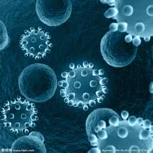

基本信息
- 学 号：16058422
- 姓 名：王子金
- 性 别：男
- 电子邮件：10085@abc.com
- 个人网站：http://ouhiyo.com/
详细资料

云南省昭通市镇雄县泼机镇人，大学生，中国大陆公民，非团员非党员人士。
从小热爱劳动，生活习惯良好，作风优良；不与他人闹矛盾，性格温顺，从来不打别人，偶尔被别人欺负。
小学就读于云南省镇雄县泼机镇中心小学，初中就读于镇雄县**中学，高中就读于昭通市**中学。从小热爱学习，遗憾的是，此习惯没有延续到高中大学。
本人作有数千张抽象漫画，数十幅临摹画作。幼时曾作诗数首。其中有首诗云:
日照香炉生紫烟，山上有家烤鸭店；
李白闻到烤鸭香，顺路找到这家店；
口水直流三千尺，可惜身上没有钱；
老板嫌他太可怜，送她一个鸭**。
另有少许论文于上大学后发表,有《我心目中的思政课》、《浅谈中医中药》、《心理剧大赛观后感》（这个不知道算不算）、《世界的计算机》等一系列胡思乱想之作。
兴趣爱好
以生命为研究对象的成功人群就可以称之为生物学家。
生物学可以分为动物学，植物学，微生物学等，所以生物学家又可以细为动物学家，植物学家，微生物学家等。根据研究生命活动的内容，又分为生态学家、生理学家、遗传学家、细胞生物学家、分子生物学与系统生物学家等。
生物学（Biology）是自然科学的一个门类。研究生物的结构、功能、发生和发展的规律。以及生物与周围环境的关系等的科学。生物学源自博物学，经历了实验生物学、分子生物学而进入了系统生物学时期。生物学这名词最早由法国博物学家拉马克于1802年提出。近年来在分子生物学进展跃进下，以核酸为物种间的共同语言，探讨范围除生物体本身，更包括生物体和环境，心理学等等领域，成为一门综合性的科学。
生物学：是研究生物体的生命现象及其生命活动规律的科学，属于自然科学。
生物学家从很多面向研究生物，因此产生很多研究领域。
生物学家在很多层面上来研究生物：
在原子和分子层面：分子生物学、生物化学-结构生物学；
在细胞层面：细胞生物学、微生物学、病毒学；
在多细胞层面：生理学、发育生物学和组织学；
在宏观领域：生态学、演化生物学。
除了上述以外，在近代分子生物学上大有突破，加上人类基因序列定序完成，生物学和其他学科的关联越来越紧密。大量的基因资讯，发展出基因组学，基因库。在解读基因密码之后，基因产物-蛋白质间的相互作用，发展出蛋白质组学等等。这类都有赖新的资讯算法来整合所得到的数据，以解决人类疾病，粮食问题和环境生态上的课题。
定义
生物学是研究生命系统各个层次的种类、结构、功能、行为、发育和起源进化以及生物与周围环境的关系等的科学。 分类 生物分类学是研究生物分类的方法和原理的生物学分支。分类就是遵循分类学原理和方法，对生物的各种类群进行命名和等级划分。瑞典生物学家林奈将生物命名后，而后的生物学家才用域(Domain)、界( Kingdom）、门( Phylum)、纲(Class)、目 (Order)、科( Family)、属( Genus)、种 (Species)加以分类。最上层的界，由怀塔克所提出的五界，比较多人接受；分别为原核生物界、原生生物界、菌物界、植物界以及动物界。 从最上层的“界”开始到“种”，愈往下层则被归属的生物之间特征愈相近。共有七大类，分别是：界门纲目科属种。